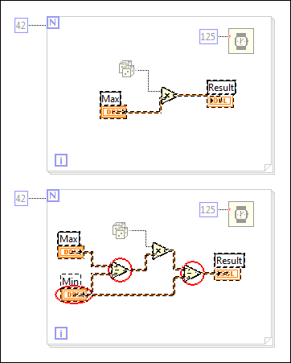

Use the Differences dialog box, available in the LabVIEW Professional Development System, to show the front panels and block diagrams of two compared VIs. After you compare two VIs, open the Differences dialog box by selecting Tools»Compare»Show Differences from the front panel or block diagram menu of a VI.
You also can access the dialog box by clicking the Show Differences button in the Compare VI Hierarchies dialog box.
The Differences dialog box includes a list of differences and details of the selected difference.
Complete the following steps to selectively find differences between the front panels and block diagrams of two compared VIs.
Place a checkmark in the Circle differences checkbox to draw a red circle around the object or objects that have changed. When you highlight a difference, objects that are part of the difference are selected. The following illustration shows an example of a block diagram difference.

In the illustration, the circled objects have been inserted into the second VI. Objects selected but not circled are not different. They are selected as anchor objects to provide reference points for the difference. Objects that appear dimmed are not part of the difference. This comparison checked for differences in VI attributes and Cosmetic changes on the block diagram but not Position/size changes.